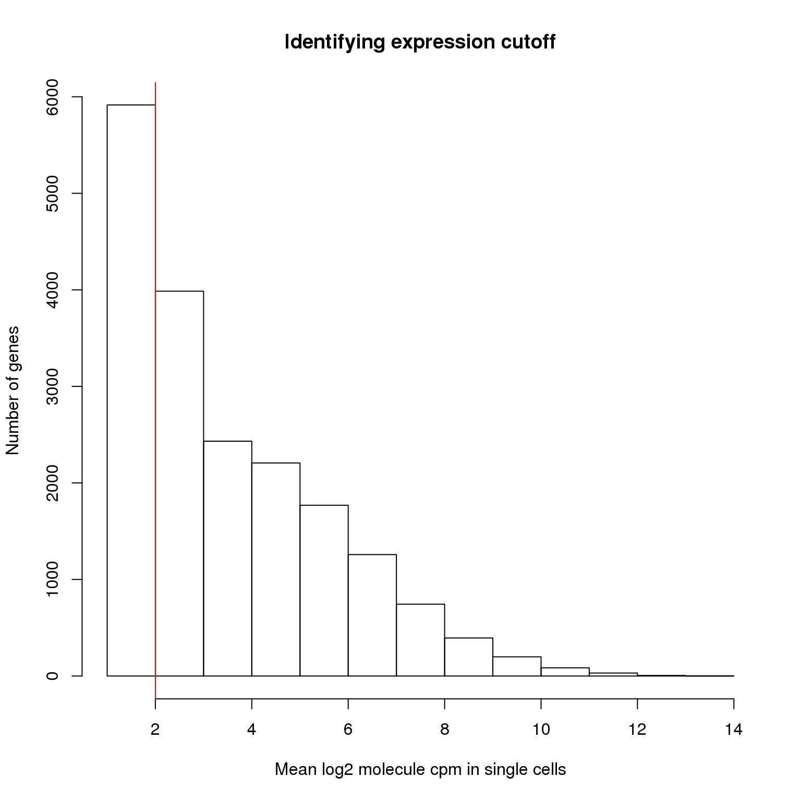
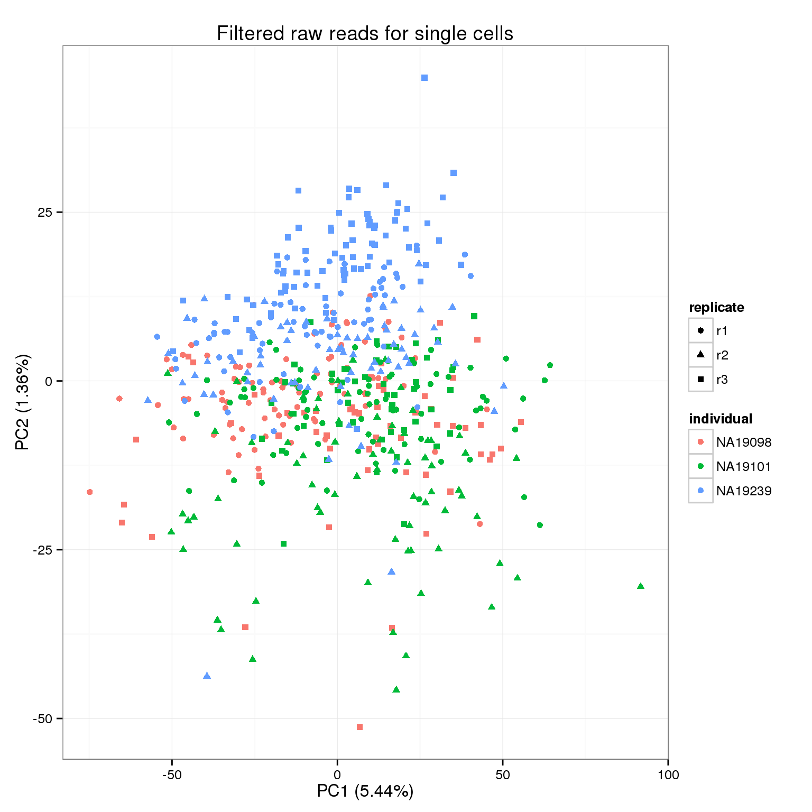
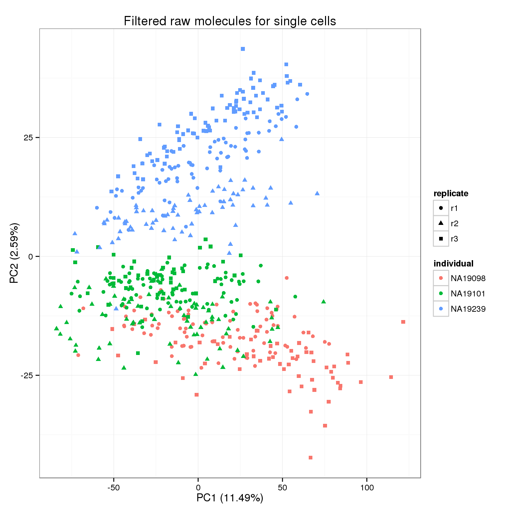
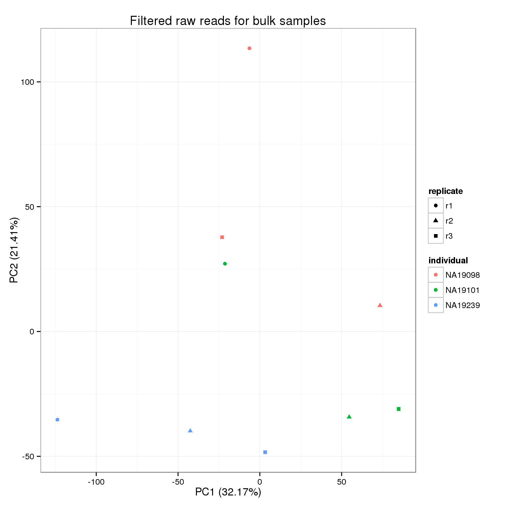

Last updated: 2016-06-11
Code version: 0242e47aaea33879b60143338a1f1f3232683dc6
library("biomaRt")
library("dplyr")
library("edgeR")
library("ggplot2")
theme_set(theme_bw(base_size = 12))
source("functions.R")This file uses the list of quality single cells defined by the quality control analysis to filter the count matrices. It also removes lowly expressed genes and genes with invalid molecule counts (greater than the maximum allowlable 1024).
Creates the following files:
Input annotation.
anno <- read.table("../data/annotation.txt", header = TRUE,
stringsAsFactors = FALSE)
head(anno) individual replicate well batch sample_id
1 NA19098 r1 A01 NA19098.r1 NA19098.r1.A01
2 NA19098 r1 A02 NA19098.r1 NA19098.r1.A02
3 NA19098 r1 A03 NA19098.r1 NA19098.r1.A03
4 NA19098 r1 A04 NA19098.r1 NA19098.r1.A04
5 NA19098 r1 A05 NA19098.r1 NA19098.r1.A05
6 NA19098 r1 A06 NA19098.r1 NA19098.r1.A06Input read counts.
reads <- read.table("../data/reads.txt", header = TRUE,
stringsAsFactors = FALSE)
stopifnot(ncol(reads) == nrow(anno),
colnames(reads) == anno$sample_id)Input molecule counts.
molecules <- read.table("../data/molecules.txt", header = TRUE,
stringsAsFactors = FALSE)
stopifnot(ncol(molecules) == nrow(anno),
colnames(molecules) == anno$sample_id)Input read counts for bulk samples (in order to filter genes).
reads_bulk <- read.table("../data/reads-bulk.txt", header = TRUE,
stringsAsFactors = FALSE)
stopifnot(ncol(reads_bulk) == 9)Input annotation for bulk samples (for PCA plot).
anno_bulk <- read.table("../data/annotation-bulk.txt", header = TRUE,
stringsAsFactors = FALSE)
head(anno_bulk) individual replicate well batch sample_id
1 NA19098 r1 bulk NA19098.r1 NA19098.r1.bulk
2 NA19098 r2 bulk NA19098.r2 NA19098.r2.bulk
3 NA19098 r3 bulk NA19098.r3 NA19098.r3.bulk
4 NA19101 r1 bulk NA19101.r1 NA19101.r1.bulk
5 NA19101 r2 bulk NA19101.r2 NA19101.r2.bulk
6 NA19101 r3 bulk NA19101.r3 NA19101.r3.bulkWe performed quality control to identify low quality single cells.
Input list of quality single cells.
quality_single_cells <- scan("../data/quality-single-cells.txt",
what = "character")We filter the annotation, reads, and molecules data to only include quality single cells.
anno_filter <- anno %>% filter(sample_id %in% quality_single_cells)
reads_filter <- reads[, colnames(reads) %in% quality_single_cells]
molecules_filter <- molecules[, colnames(molecules) %in% quality_single_cells]
stopifnot(nrow(anno_filter) == ncol(reads_filter),
nrow(anno_filter) == ncol(molecules_filter),
anno_filter$sample_id == colnames(reads_filter),
anno_filter$sample_id == colnames(molecules_filter))The number of good quality cells is not even across batches.
table(anno_filter$individual, anno_filter$replicate)
r1 r2 r3
NA19098 85 0 57
NA19101 80 70 51
NA19239 74 68 79We filter the genes to exlude both those that are lowly expressed or over-expressed (>= 1024 molecules in a given cell).
We identify the lower cutoff using the mean log2 molecule counts per million (cpm) in the 564 high quality single cells.
molecules_cpm_mean <- rowMeans(cpm(molecules_filter, log = TRUE))
hist(molecules_cpm_mean, xlab = "Mean log2 molecule cpm in single cells",
ylab = "Number of genes", main = "Identifying expression cutoff")
lower_exp_cutoff <- 2
abline(v = lower_exp_cutoff, col = "red")
genes_pass_filter <- rownames(molecules_filter)[molecules_cpm_mean > lower_exp_cutoff]13112 genes have a mean log2 molecule cpm greater than 2, including 48 ERCC genes.
Next we identify any genes which have greater than 1024 molecules in any given single cell. These are above our theoretical maximum number of UMIs (it can happen when a highly expressed gene as multiple start sites), and thus we cannot correct them for the collision probability.
overexpressed_rows <- apply(molecules_filter, 1, function(x) any(x >= 1024))
overexpressed_genes <- rownames(molecules_filter)[overexpressed_rows]
overexpressed_genes[1] "ENSG00000198888" "ENSG00000198804" "ENSG00000198712" "ENSG00000198899"
[5] "ENSG00000198938" "ENSG00000198886"ensembl <- useMart(host = "grch37.ensembl.org",
biomart = "ENSEMBL_MART_ENSEMBL",
dataset = "hsapiens_gene_ensembl")
overexpressed_genes_info <- getBM(attributes = c("ensembl_gene_id", "chromosome_name",
"external_gene_name", "transcript_count",
"description"),
filters = "ensembl_gene_id",
values = overexpressed_genes[grep("ENSG", overexpressed_genes)],
mart = ensembl)
overexpressed_genes_info ensembl_gene_id chromosome_name external_gene_name transcript_count
1 ENSG00000198712 MT MT-CO2 1
2 ENSG00000198804 MT MT-CO1 1
3 ENSG00000198886 MT MT-ND4 1
4 ENSG00000198888 MT MT-ND1 1
5 ENSG00000198899 MT MT-ATP6 1
6 ENSG00000198938 MT MT-CO3 1
description
1 mitochondrially encoded cytochrome c oxidase II [Source:HGNC Symbol;Acc:7421]
2 mitochondrially encoded cytochrome c oxidase I [Source:HGNC Symbol;Acc:7419]
3 mitochondrially encoded NADH dehydrogenase 4 [Source:HGNC Symbol;Acc:7459]
4 mitochondrially encoded NADH dehydrogenase 1 [Source:HGNC Symbol;Acc:7455]
5 mitochondrially encoded ATP synthase 6 [Source:HGNC Symbol;Acc:7414]
6 mitochondrially encoded cytochrome c oxidase III [Source:HGNC Symbol;Acc:7422]6 genes have molecule counts greater than or equal to 1024 in at least one single cell, which includes 0 ERCC control genes.
Update the list of genes passing the filters.
genes_pass_filter <- setdiff(genes_pass_filter, overexpressed_genes)Filter the data to only include the subset of 13106 genes which pass the lower and upper expression cutoffs. This subset includes 48 ERCC genes.
reads_filter <- reads_filter[rownames(reads_filter) %in% genes_pass_filter, ]
molecules_filter <- molecules_filter[rownames(molecules_filter) %in% genes_pass_filter, ]
reads_bulk_filter <- reads_bulk[rownames(reads_bulk) %in% genes_pass_filter, ]
stopifnot(nrow(reads_filter) == length(genes_pass_filter),
dim(reads_filter) == dim(molecules_filter),
nrow(reads_bulk_filter) == nrow(molecules_filter))Output filtered data.
write.table(anno_filter, "../data/annotation-filter.txt", quote = FALSE,
sep = "\t", row.names = FALSE)
write.table(reads_filter, "../data/reads-filter.txt", quote = FALSE,
sep = "\t", col.names = NA)
write.table(molecules_filter, "../data/molecules-filter.txt", quote = FALSE,
sep = "\t", col.names = NA)
write.table(reads_bulk_filter, "../data/reads-bulk-filter.txt", quote = FALSE,
sep = "\t", col.names = NA)Output list of genes that passed filters.
write.table(genes_pass_filter, "../data/genes-pass-filter.txt", quote = FALSE,
sep = "\t", row.names = FALSE, col.names = FALSE)pca_reads_filter <- run_pca(reads_filter)
pca_reads_filter_plot <- plot_pca(pca_reads_filter$PCs, explained = pca_reads_filter$explained,
metadata = anno_filter, color = "individual",
shape = "replicate") +
labs(title = "Filtered raw reads for single cells")
pca_reads_filter_plot
pca_molecules_filter <- run_pca(molecules_filter)
pca_molecules_filter_plot <- plot_pca(pca_molecules_filter$PCs, explained = pca_molecules_filter$explained,
metadata = anno_filter, color = "individual",
shape = "replicate") +
labs(title = "Filtered raw molecules for single cells")
pca_molecules_filter_plot
Because we start with the union of observed genes in the single cell or bulk samples and then the expression cutoff is based on the expresssion in the single cells, it is possible that a gene is not observed at all in the bulk samples. This causes an error with the PCA because that gene is invariant, so they are filtered before performing PCA.
reads_bulk_zeros <- rowSums(reads_bulk_filter) == 0
rownames(reads_bulk_filter)[reads_bulk_zeros][1] "ERCC-00048"pca_reads_bulk_filter <- run_pca(reads_bulk_filter[!reads_bulk_zeros, ])
pca_reads_bulk_filter_plot <- plot_pca(pca_reads_bulk_filter$PCs, explained = pca_reads_bulk_filter$explained,
metadata = anno_bulk, color = "individual",
shape = "replicate") +
labs(title = "Filtered raw reads for bulk samples")
pca_reads_bulk_filter_plot
sessionInfo()R version 3.2.0 (2015-04-16)
Platform: x86_64-unknown-linux-gnu (64-bit)
locale:
[1] LC_CTYPE=en_US.UTF-8 LC_NUMERIC=C
[3] LC_TIME=en_US.UTF-8 LC_COLLATE=en_US.UTF-8
[5] LC_MONETARY=en_US.UTF-8 LC_MESSAGES=en_US.UTF-8
[7] LC_PAPER=en_US.UTF-8 LC_NAME=C
[9] LC_ADDRESS=C LC_TELEPHONE=C
[11] LC_MEASUREMENT=en_US.UTF-8 LC_IDENTIFICATION=C
attached base packages:
[1] stats graphics grDevices utils datasets methods base
other attached packages:
[1] testit_0.4 ggplot2_1.0.1 edgeR_3.10.2 limma_3.24.9
[5] dplyr_0.4.2 biomaRt_2.24.0 knitr_1.10.5
loaded via a namespace (and not attached):
[1] Rcpp_0.12.4 formatR_1.2 GenomeInfoDb_1.4.0
[4] plyr_1.8.3 bitops_1.0-6 tools_3.2.0
[7] digest_0.6.8 RSQLite_1.0.0 evaluate_0.7
[10] gtable_0.1.2 DBI_0.3.1 yaml_2.1.13
[13] parallel_3.2.0 proto_0.3-10 httr_0.6.1
[16] stringr_1.0.0 S4Vectors_0.6.0 IRanges_2.2.4
[19] stats4_3.2.0 grid_3.2.0 Biobase_2.28.0
[22] R6_2.1.1 AnnotationDbi_1.30.1 XML_3.98-1.2
[25] rmarkdown_0.6.1 reshape2_1.4.1 magrittr_1.5
[28] scales_0.4.0 htmltools_0.2.6 BiocGenerics_0.14.0
[31] MASS_7.3-40 assertthat_0.1 colorspace_1.2-6
[34] labeling_0.3 stringi_1.0-1 RCurl_1.95-4.6
[37] lazyeval_0.1.10 munsell_0.4.3